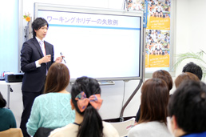

セミナー日程
|
日時 |
2014年 3月 30日 （日） 13：30 開場 |
|
場所 |
じばさん三重４階(研修室３) ★ アクセス詳細はこちら |
|
参加費 |
無料 |

留学＆ワーキングホリデーセミナー～三重～ 内容
私は２年間オーストラリアのブリスベンへ行ってきました。
やはり海外生活の中で言葉の壁にぶつかり、正直くじけそうになった時が何度もあります。
ただ入国してすぐの語学学校で本当にたくさんの人たちと出会い、
オーストラリアという知らない土地で新しい発見や自己主張に揉まれた事で
自然と自分も強くなっていくのを実感できたと思います。
今回はこのような体験から、みなさまに3つ大切な事をお伝えできればと考えています。
1、海外生活の心得
2、現地で辛い事、大変だった事
3、英語を取得する事でどう変わるか
これから海外へご渡航をお考えの方へ、
みなさまの海外生活をより良いものにするために、何か一つでも参考にしていただければと思います！！


留学＆ワーキングホリデーセミナー～三重～ 講師紹介
日本ワーキング・ホリデー協会 新井 俊哉（Arai Toshiya）

講師からのコメント：
実際にワーキングホリデーに行ってみて、帰国をして気づいた
もっと海外でしておくべき事を当日皆様にお伝えできればと思います。
実際に現地に行ってあっ、という間に時間が過ぎていき、日本を出発する前の準備期間の大切を思い知らされました。
正直現地でどうにかなる（仕事はみつかる）、、、と浅はかな考えで渡航してしまった自分。
皆様は自分と同じ間違いをする必要はありません！
セミナーでお話を聞いていただければ、それだけでひとつ失敗を減らす事でできると思います。
海外留学・ワーホリを希望されているけどまだ不安が多いというあなた。
是非お話を聞きにきていただければと思います。
留学＆ワーキングホリデーセミナー～三重～ セミナー会場詳細
じばさん三重 ４階(研修室３)
三重県四日市市安島一丁目3番18号
● 近鉄名古屋線「四日市駅」から徒歩で約5分
アクセスマップ ： http://jibasanmie.or.jp/home/2006/06/post_17.html
留学＆ワーキングホリデーセミナー～三重～ お問い合わせに関して
ご質問等、お問い合わせはこちらのメールアドレスまでご連絡下さいませ。
info@jawhm.or.jp
【注意】お電話でのお問い合わせは受け付けておりませんのでご了承ください。